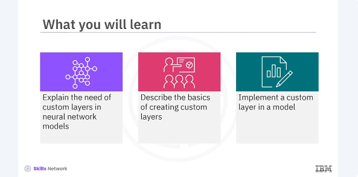
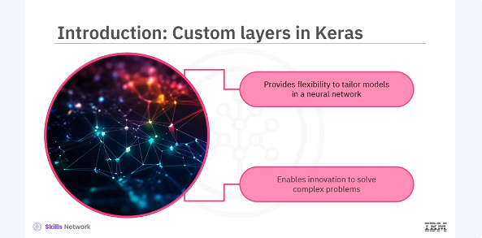
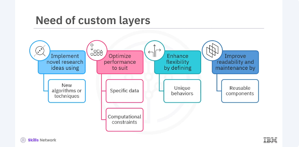

Creating Custom Layers in Keras

After watching this video, you'll be able to explain the need of custom layers in neural network models, describe the basics of creating custom layers, implement a custom layer in a model.

Custom layers allow you to define your own operations in a neural network, giving you the flexibility to tailor your models to specific tasks and experiment with new ideas. Whether you're working on cutting-edge research or building a specialized application, understanding how to create custom layers can greatly enhance your ability to innovate and solve complex problems.

Creating custom layers is essential when you need specific functionalities not provided by Keras. Standard layers like dense, convolutional or LSTM cover a broad range of use cases, but sometimes you need something more specific. Custom layers allow you to implement novel research ideas. If you're developing new algorithms or techniques, custom layers let you implement them directly into your models. Optimize performance, tailor layers to better suit your specific data or computational constraints. Enhance flexibility, custom layers enable you to define unique behaviors that aren't possible with standard layers. Improve readability and maintenance, encapsulate complex logic and reusable components, making your code cleaner and easier to manage. By creating custom layers, you unlock the full potential of Keras, allowing for more sophisticated and fine-tuned models.
pyenv activate venv3.10.4
from tensorflow.keras.layers import Layer
class MyCustomLayer(Layer):
def __init__(self, units=32, **kwargs):
super(MyCustomLayer, self).__init__(**kwargs)
self.units = units
def build(self, input_shape):
self.w = self.add_weight(
shape=(input_shape[-1], self.units),
initializer='random_normal',
trainable=True
)
self.b = self.add_weight(
shape=(self.units,),
initializer='zeros',
trainable=True
)
def call(self, inputs):
return tf.matmul(inputs, self.w) + self.b
Lets look at the basic structure of a custom layer in keras. Here's an example of a simple custom layer that performs a dense operation. To create a custom layer, you need the subclass, the layer class from from tensorflow.keras.layers. This involves implementing three key methods, init, that initializes the layer's attributes. build, that creates the layer's weights. This method is called once during the first call to the layer. call, that defines the forward path logic.
class CustomDenseLayer(Layer):
def __init__(self, units=32):
super(CustomDenseLayer, self).__init__()
self.units = units
def build(self, input_shape):
self.w = self.add_weight(
shape=(input_shape[-1], self.units),
initializer='random_normal',
trainable=True
)
self.b = self.add_weight(
shape=(self.units,),
initializer='zeros',
trainable=True
)
def call(self, inputs):
return tf.nn.relu(tf.matmul(inputs, self.w) + self.b)
Now let's implement a custom dense layer that includes activation logic. You will define the init, build, and call methods to create a fully functional layer. This custom layer will perform a dense operation followed by a relu activation. Finally, you will use your custom layer in a Keras model. Integrating custom layers into a model is straightforward, just like using any other Keras layer.
from tensorflow.keras.models import Sequential
model = Sequential([
CustomDenseLayer(64),
CustomDenseLayer(10)
])
model.compile(optimizer='adam', loss='categorical_crossentropy')
Here's an example of a simple sequential model using a custom dense layer. In this video, you learned that creating custom layers in keras is a powerful way to extend the functionality of your neural networks. It allows you to tailor your models to specific needs, implement novel research ideas, and optimize performance for unique tasks. By practicing and experimenting with custom layers, you'll gain a deeper understanding of how neural networks work and enhance your ability to innovate.